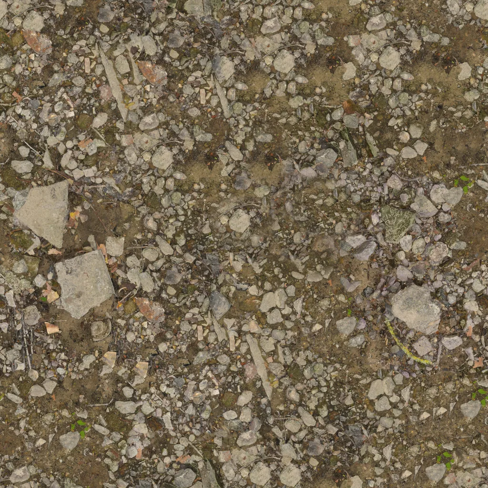
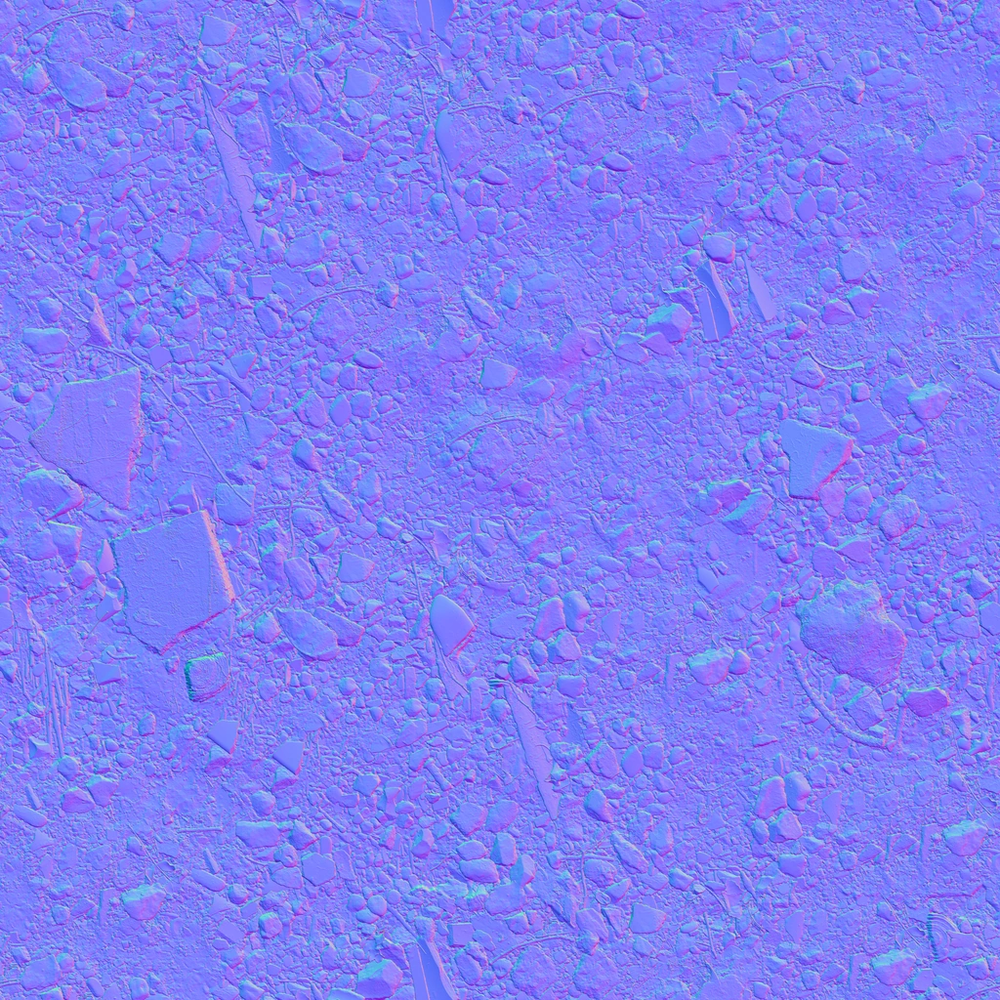
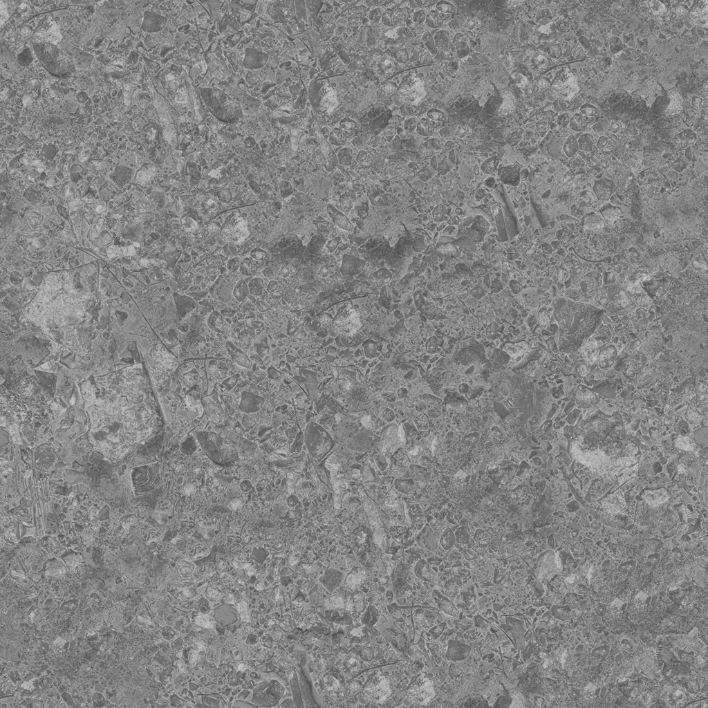
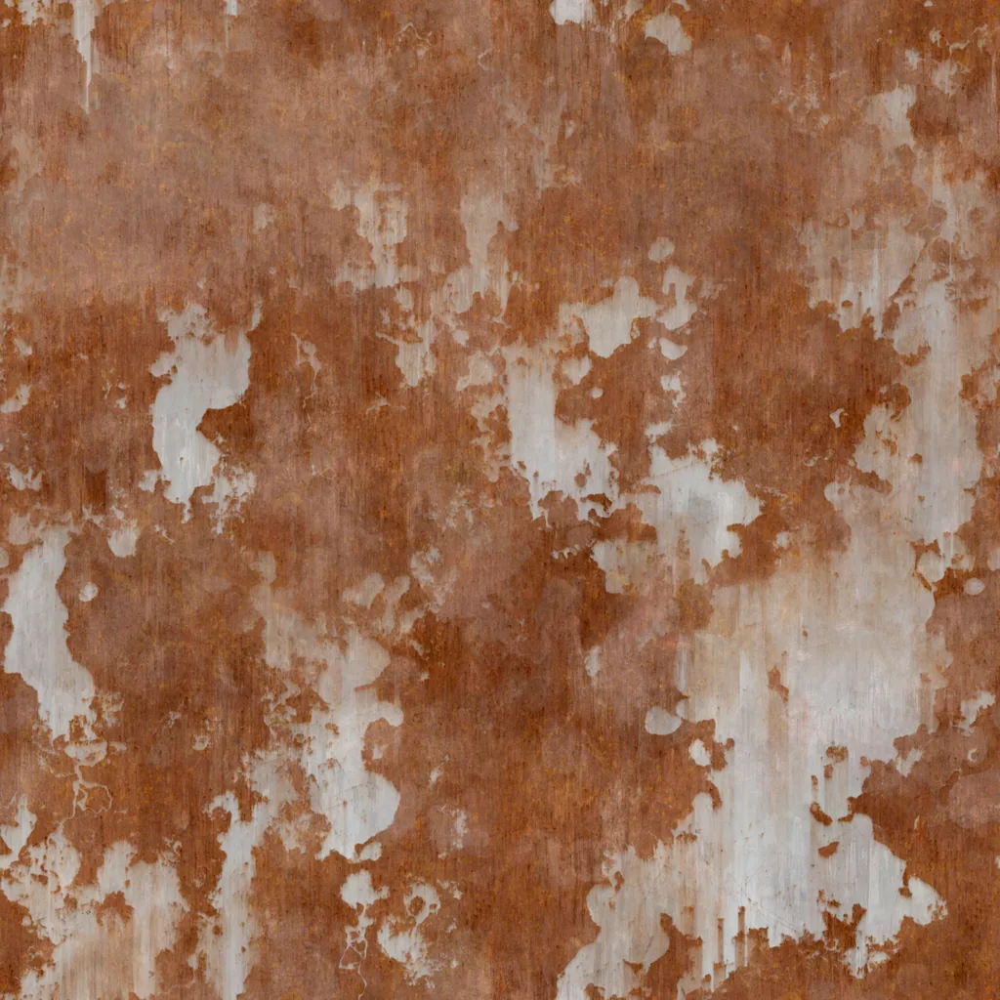
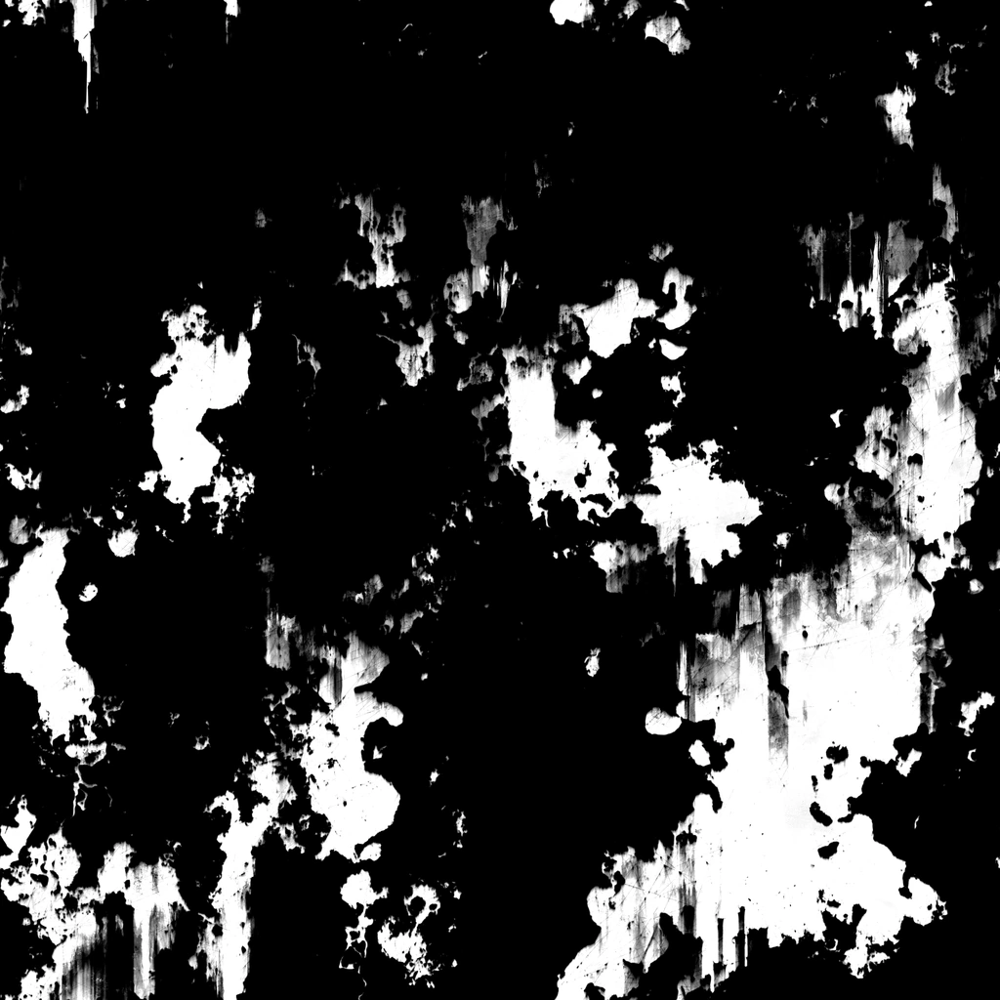

Generated silhouettes and web-ready textures. All CC0 or original.
The man has three states, one per stage. The doorkeeper has one — he does not
change, which is the point. Every figure is a flat silhouette filled with currentColor,
so it inherits the stage palette without a second asset.
The doorkeeper stands at roughly 60% of the opening height; the man is smaller still and stands outside it. Toggle to stage 3 to check the assets survive the colour drain and read against the radiance.





Converted from 8K sources totalling 456 MB. The full 1K set is 1.9 MB — a 240× reduction. Normal, roughness, and metalness are encoded at quality 94 rather than 82: they are data, not pictures, and lossy artefacts in them show up as visible shading noise.
The radiance is the only saturated colour in the piece and appears nowhere before
stage 3. Regenerate every SVG with cd tools && node build-svg.mjs.